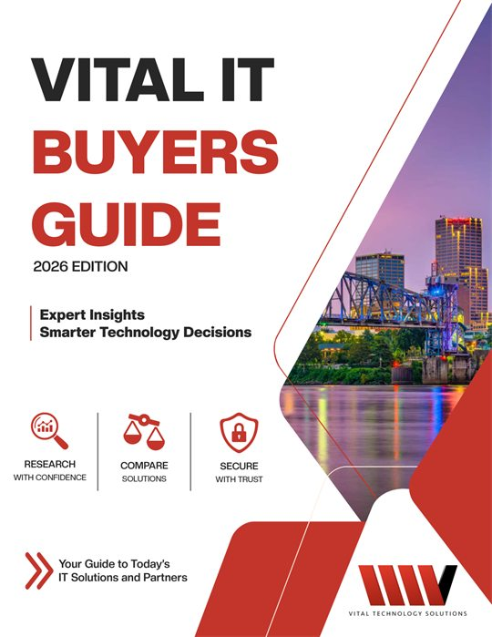

IT Support for Arkansas Businesses That Need Technology to Work
Vital Technology Solutions helps small and midsize Arkansas businesses keep computers, networks, cloud systems, security, and backups running with less day-to-day stress. We act as an outsourced IT team for organizations that rely on technology but do not want to manage every issue internally. From our Benton office, we provide plain-English support, remote help, on-site assistance when needed, and ongoing monitoring for businesses across Arkansas.
Your IT Shouldn't Be Something You Have to Worry About
When support is slow, explanations are confusing, or systems keep breaking, technology starts pulling attention away from the work your team is trying to do.
Costly Downtime
Computer problems, network issues, and internet interruptions can slow employees down and frustrate customers. We help reduce preventable disruption through monitoring, maintenance, and support that focuses on keeping the business moving.
Slow or Confusing Support
Business owners should not have to chase vendors, decode technical jargon, or wait too long for an answer. Our approach is built around responsive help and clear communication without the geek-speak.
Backup and Recovery Worries
Uncertain backups create real stress when files are deleted, systems fail, or a security incident affects operations. We help businesses plan for data backup and recovery so problems are easier to respond to when they happen.
Unpredictable IT Costs
Surprise invoices and unclear responsibility make IT harder to budget and manage. Vital Technology Solutions offers flat-rate managed service options with packages based on business size, needs, and budget.
IT Support Built Around the Way Arkansas Businesses Work
Vital Technology Solutions combines managed services, security, cloud support, and vendor coordination so your team has one practical place to turn for technology help.
Responsive, Plain-English Help
We support users through phone support, online service tickets, remote support tools, and on-site help when needed. Our team explains issues clearly so owners and employees understand what is happening and what comes next.
Monitoring and Network Support
Our managed IT services include 24/7/365 network monitoring to help identify issues before they turn into larger interruptions. In-house support is available Monday through Friday, 8AM to 5PM CST, with emergency response commitments for urgent needs.
Security, Backup, and Cloud Services
We help businesses strengthen cybersecurity, manage backups, support recovery planning, and use cloud computing more effectively. These services are designed for organizations that depend on reliable access to systems, files, and line-of-business software.
Cybersecurity →One Place for IT Coordination
Technology problems often involve hardware, software, internet providers, renewals, websites, and outside vendors. We help coordinate those moving parts so your team is not stuck managing blame between providers.
A Practical Plan for Better Business IT
Learn more about Vital Technology SolutionsStart with a conversation about where technology is helping, where it is slowing your team down, and what risks need attention first. From there, we can recommend a managed IT approach that fits your business size, daily operations, security needs, and budget. You get clearer responsibility, fewer avoidable surprises, and an IT partner focused on helping your team stay productive.
How to Get the IT Support You Need
A simple, proven process to assess your IT, eliminate risks, and give your business a clear path forward.
Book Your Discovery Call
Click the link below to schedule a free, no-pressure discovery call to talk about your problems, needs and situation and if we are the right company to help you.
Get a Free IT Assessment
We’ll perform a security and network assessment to identify gaps and risks that could impact your productivity and compliance.
Review Your Plan and Options
Get a clear plan with solutions tailored to your business, so you can get back to focusing on your work with total confidence in your IT.

Download Our "Business Owners' Guide to IT Support Services and Fees"
Our free guide helps you understand what to look for in IT support, the fees involved, and how choosing the right partner can protect your business from data breaches, compliance risks, and unnecessary downtime.
Get IT Support That Helps You Focus on Your Business
If your Arkansas business is tired of recurring IT problems, slow answers, or uncertainty around security and backups, Vital Technology Solutions is ready to help. Schedule a consultation to talk through your current setup and the next practical steps for improving support, reliability, and peace of mind.